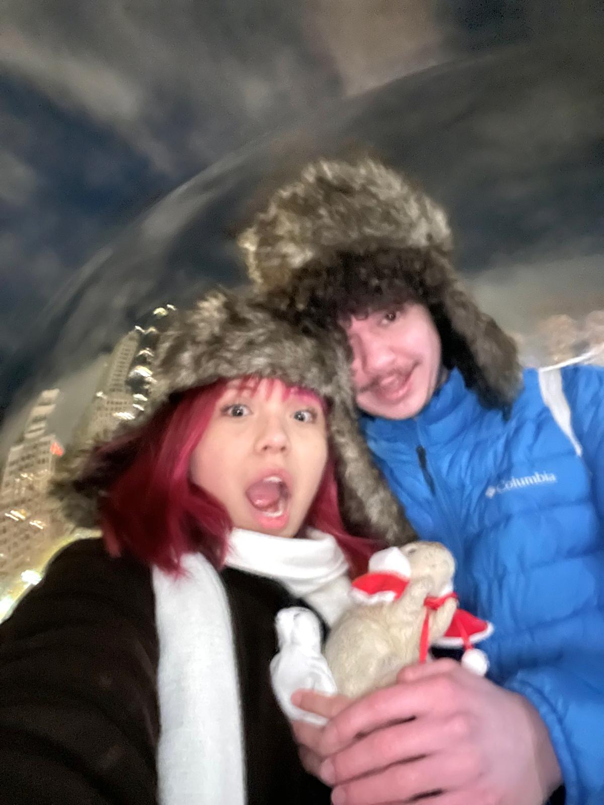
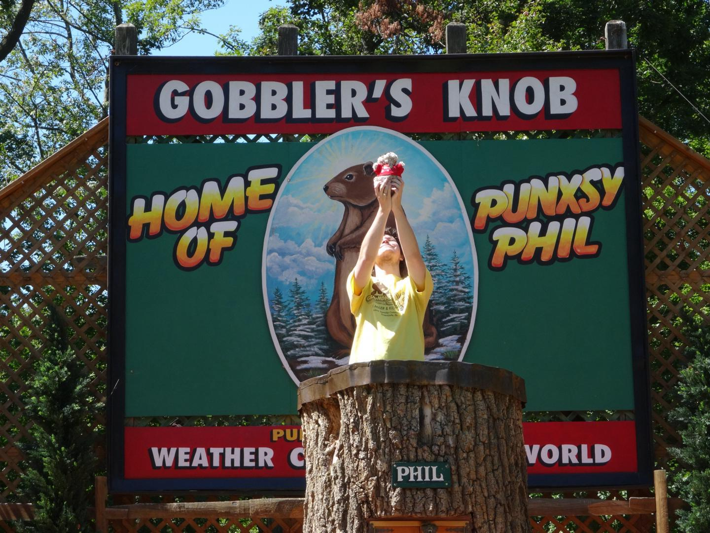
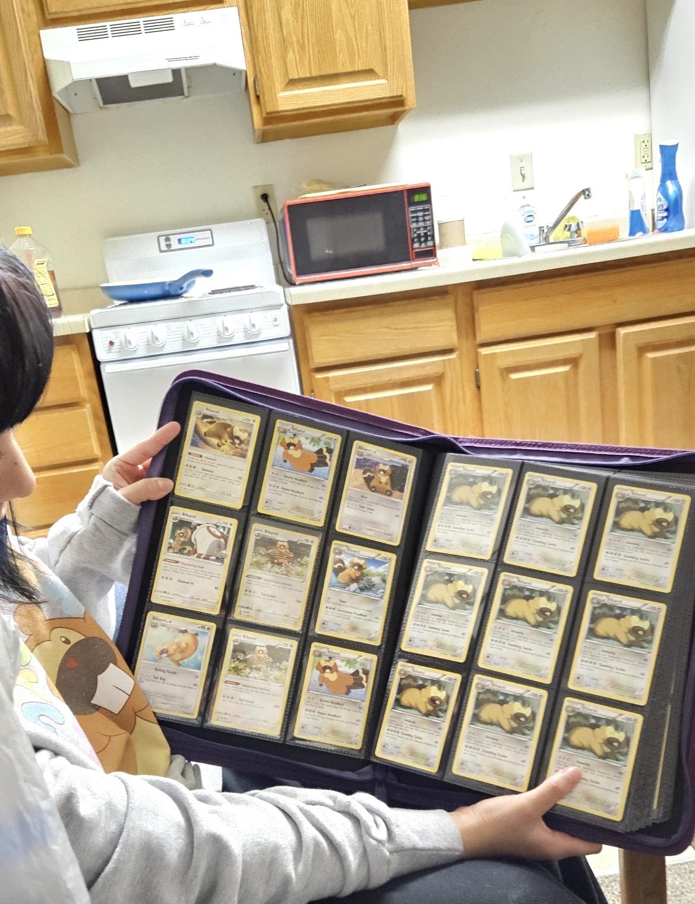
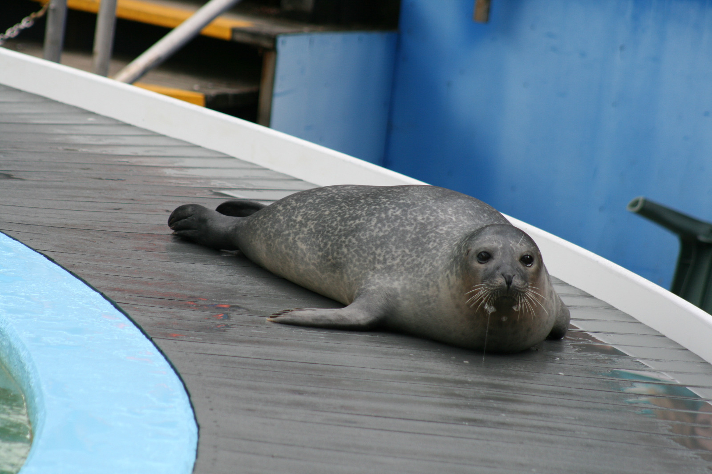
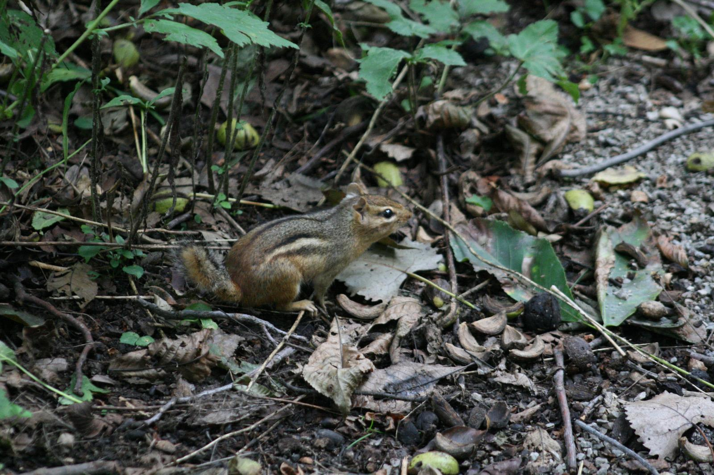
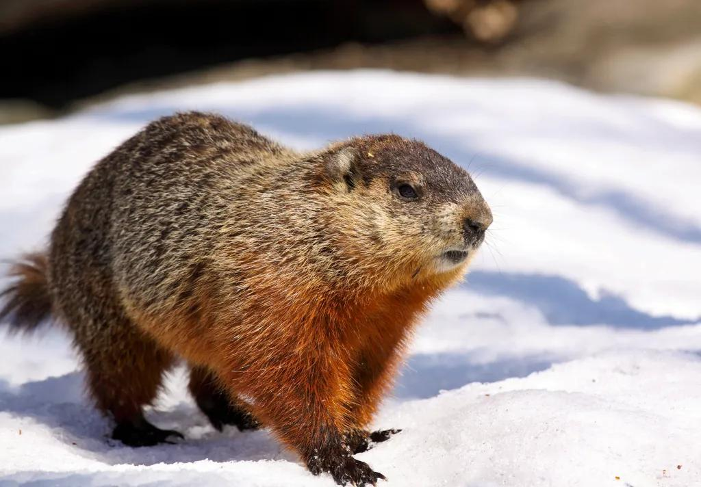
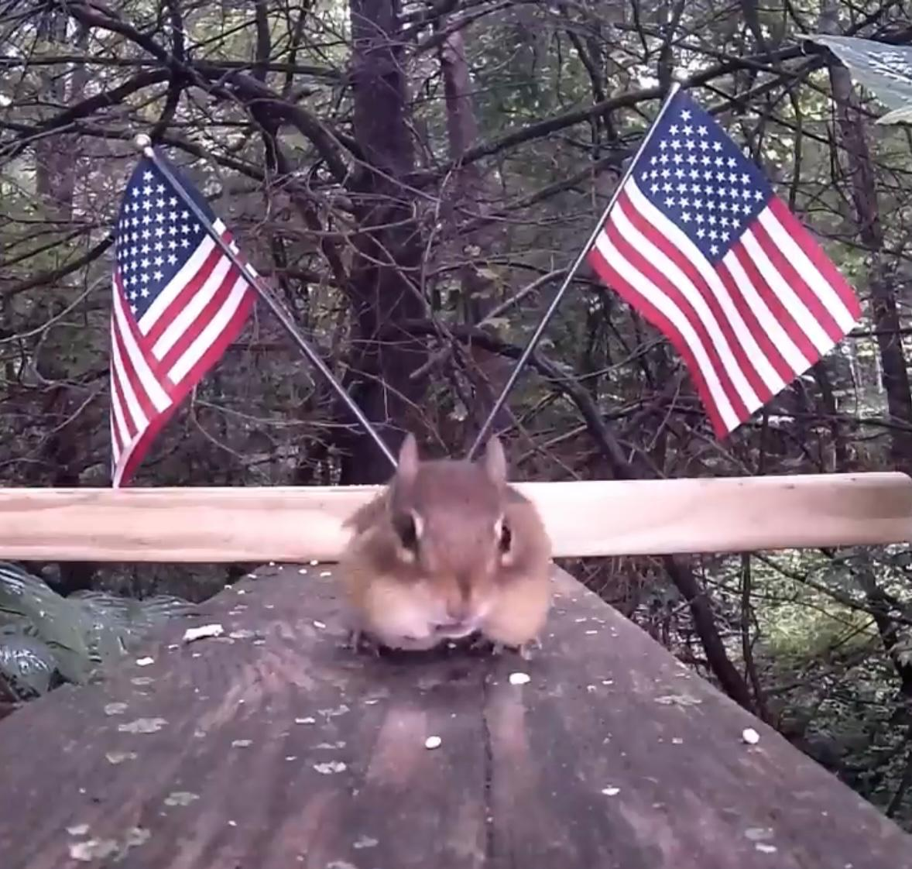

Who I Am
Hello! My name is Johnette. I am an out of state student from Pennsylvania, and I am married to Sealmore Hobson. I love traveling and lived in Australia for a year before attending college. I am an accounting major aspiring to become a forensic accountant. I am completely new to making websites but so far find it interesting and I hope to learn more soon!


My Interests
When I'm not busy with school, bed rotting, or working, I like to spend time outdoors with the chipmunks on campus. I love hiking, fishing, and wildlife watching. I'm also a huge fan of collecting Pokémon cards my absolute favorites are Bidoof and Bibarel!

Favorite Animals
I really love observing wildlife alot, and love almost every animal but my favorites are rodents and seals (not leopard seals)!
Here are some of my favorite wildlife photos:



